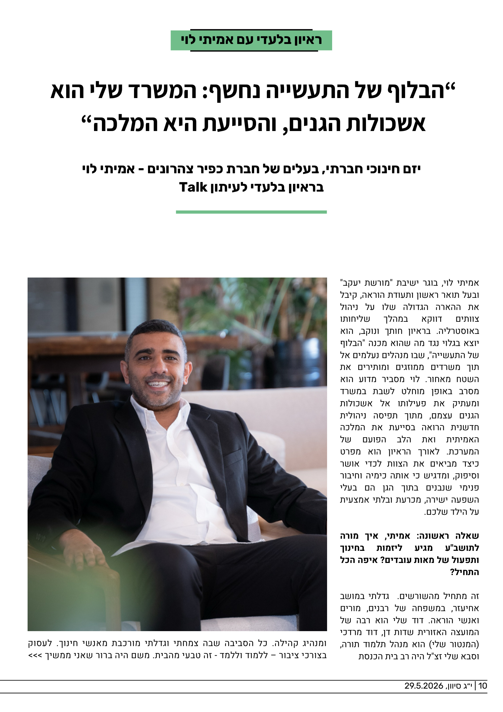
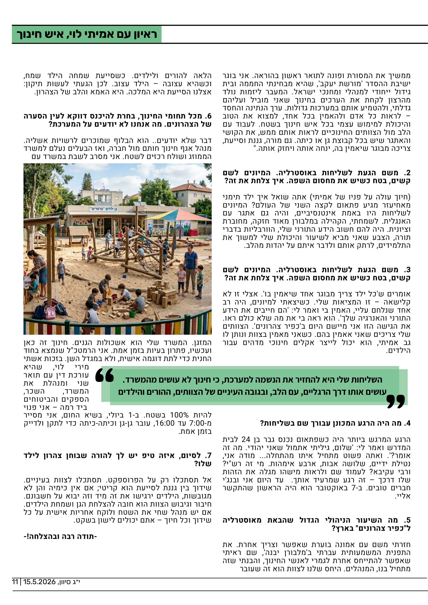

ამიტაი ლევი — სოციალური და საგანმანათლებლო მეწარმე, Kfir-ის გაკვეთილების შემდგომი პროგრამების მფლობელი, „მორეშეთ იააკოვის“ იეშივის კურსდამთავრებული, ბაკალავრის ხარისხისა და მასწავლებლის კვალიფიკაციის მფლობელი — გაზეთ Talk-ის ექსკლუზიურ ინტერვიუში.
ამიტაი, როგორ იქცა ზეპირი თორის მასწავლებელი საგანმანათლებლო მეწარმედ, რომელიც ასობით თანამშრომელს მართავს? საიდან დაიწყო ყველაფერი?
ყველაფერი ჩემი ფესვებიდან იწყება. გავიზარდე მოშავ ახიეზერში, რაბინების, მასწავლებლებისა და პედაგოგების ოჯახში. ერთი ბიძა სდოთ-დანის რეგიონული საბჭოს რაბინია, ბიძაჩემი მორდეხაი — ჩემი მენტორი — „თალმუდ თორას“ სკოლას ხელმძღვანელობს, ხოლო ჩემი განსვენებული ბაბუა სინაგოგის რაბინი და თემის ლიდერი იყო. მთელი გარემო, რომელშიც ვიზრდებოდი, განათლების ადამიანებისგან შედგებოდა. საზოგადოებაზე ზრუნვა — სწავლა და სწავლება — ოჯახიდან ბუნებრივად მომყვებოდა. ამიტომ ცხადი იყო, რომ ტრადიციას გავაგრძელებდი და პედაგოგიკაში ბაკალავრის ხარისხს მივიღებდი. დავამთავრე „მორეშეთ იააკოვის“ ჰესდერ-იეშივა, რომელსაც ისრაელის მენეჯერებისა და პედაგოგების აღზრდის უნიკალურ კერად მივიჩნევ. მეწარმეობისკენ მიბიძგა სურვილმა, დიდ სისტემებში დამენერგა ის საგანმანათლებლო ღირებულებები, რომლებსაც ვემსახურები და რომლებზეც გავიზარდე. ეს არის გაცემისა და სიკეთის ღირებულებები — დაინახო თითოეული ადამიანი და გჯეროდეს მისი, თითოეულ პედაგოგში აღმოაჩინო სიკეთე და თვითრეალიზაციის შესაძლებლობა. საგანმანათლებლო გუნდებთან გულით მუშაობა ნიშნავს, რომ ნამდვილად ხედავ მათ და იმ სირთულეებსა და გამოწვევებს, რომლებიც ყოველ საბავშვო ბაღის ჯგუფსა თუ კლასშია. მასწავლებელს, აღმზრდელსა და თანაშემწესაც სჭირდება ადამიანი, რომელსაც მისი სჯერა, მიმართულებას აძლევს და აძლიერებს.
შემდეგ საგანმანათლებლო მისიით ავსტრალიაში გაემგზავრეთ. იქ შესარჩევი პროცესი რთულია, განსაკუთრებით ენობრივი ბარიერის პირობებში. როგორ გაართვით თავი?
მეკითხებით, როგორ აღმოჩნდა იემენური წარმოშობის ბიჭი ახიეზერიდან მოულოდნელად მსოფლიოს მეორე მხარეს? შესარჩევი პროცესი მართლაც ინტენსიური იყო და ინგლისურიც გამოწვევას წარმოადგენდა. საბედნიეროდ, მელბურნის ებრაული თემი ძალიან ძლიერი, შეკრული და სიონისტურია. მათთვის მნიშვნელოვანი იყო თორის ჩემი ცოდნა, ამ ცოდნის გადმოცემის უნარი, გაკვეთილზე შეტანილი სიცოცხლე და ის, რომ შემეძლო მოსწავლეების დაინტერესება, მათი ყურადღების მიპყრობა და იუდაიზმზე გულწრფელად საუბარი.
იყო ვინმე, ვისაც თქვენი სჯეროდა მაშინ, როდესაც ყველა ვერ ხედავდა თქვენს შესაძლებლობებს?
ამბობენ, რომ „ყოველ ბავშვს სჭირდება ერთი ზრდასრული, რომელსაც მისი სჯერა“. ჩემთვის ეს კლიშე არ არის — ეს ჩემი რეალობაა. შერჩევის პროცესში ერთი რაბინი ჩემთვის იბრძოდა, ჩემი სჯეროდა და მეუბნებოდა: „მათ შენი თორის ცოდნა და შენი ენერგია სჭირდებათ“. მან ჩემში დაინახა ის, რასაც ყველა ვერ ხედავდა. სწორედ ამ მიდგომას ვიყენებ დღეს Kfir-ის გაკვეთილების შემდგომ პროგრამებში. ჩემს გუნდებს სჭირდებათ, რომ მათი მჯეროდეს. როდესაც გუნდის მჯერა და მას რეალურად ვუდგავარ მხარში, მას ბავშვებისთვის შესანიშნავი საგანმანათლებლო გარემოს შექმნა შეუძლია.
მოულოდნელად სასწავლო დარბაზში 24 წლის კაცი შემოვიდა და მითხრა: „გამარჯობა, გუშინ გავიგე, რომ ებრაელი ვარ. რას ნიშნავს ეს?“ — და შენ მასთან ერთად ყველაფერს თავიდან იწყებ.
რა იყო ამ მისიის დროს თქვენთვის გარდამტეხი მომენტი?
ყველაზე ამაღელვებელი მომენტი იყო, როდესაც სასწავლო დარბაზში მოულოდნელად 24 წლის კაცი შემოვიდა და მითხრა: „გამარჯობა, გუშინ გავიგე, რომ ებრაელი ვარ. რას ნიშნავს ეს?“ და შენ მასთან ერთად ყველაფერს თავიდან იწყებ… დილის ლოცვა „მოდე ანი“, ხელების რიტუალური დაბანა, სამი მამამთავარი, ოთხი დედამთავარი. ვინ არის რაში? და რაბი აკივა? იდგე იქ და ხედავდე, როგორ აღმოაჩენს ადამიანი შენი დახმარებით საკუთარ იდენტობას — ეს შინაგანად შეგძრავს. მე და ბენჯი დღემდე კარგი მეგობრები ვართ. 7 ოქტომბერს პირველი სწორედ მან დამირეკა.
მართვის რა უმთავრესი გაკვეთილი ჩამოიტანეთ ავსტრალიიდან ისრაელში, Kfir-ის გაკვეთილების შემდგომ პროგრამებში?
დავბრუნდი ძლიერი რწმენით, რომ ყველაფერი შეიძლება და უნდა იყოს სხვაგვარად. მნიშვნელოვანი გარდატეხა მელბურნის Yavneh-ში მოხდა: იქ ვნახე, რომ პედაგოგებთან სრულიად სხვაგვარი დამოკიდებულება შესაძლებელია, და გავაცნობიერე, რომ ეს ჩვენგან, მენეჯერებისგან იწყება. გუნდების მიმართ ჩვენი დამოკიდებულება შემდეგ მშობლებსა და ბავშვებს გადაეცემა. როცა აღმზრდელის თანაშემწე ბედნიერია, ბავშვიც ბედნიერია; როცა ის მოწყენილია, ბავშვიც მოწყენილია. ამიტომ ცვლილებების მოსატანად მოვედი: ჩვენთან თანაშემწე დედოფალია. ის გაკვეთილების შემდგომი პროგრამის დედა და გულია.
განათლების ყველა მიმართულებიდან სწორედ ყველაზე რთულ სფეროში — გაკვეთილების შემდგომ პროგრამებში — შესვლა გადაწყვიტეთ. რა არ ვიცით ამ სისტემის შესახებ?
რაც ბევრმა არ იცის, ის ილუზიაა, რომელსაც ადგილობრივ თვითმმართველობებს ჰყიდიან. განათლების დეპარტამენტის ხელმძღვანელი კომპანიასთან ხელშეკრულებას აფორმებს, შემდეგ კი მფლობელი კონდიცირებულ ოფისში უჩინარდება და ადგილზე კოორდინატორებს გზავნის. მე კონდიცირებულ ოფისში ჯდომაზე უარს ვამბობ. ჩემი ოფისი საბავშვო ბაღების გაერთიანებებშია. განათლება აქ და ახლაა — პრობლემების რეალურ დროში მოგვარებაა. მე წინ მდგომი ხელმძღვანელი ვარ, რომელიც პირად მაგალითს აძლევს სხვებს და არა რეალობას მოწყვეტილ კაბინეტში მჯდომი. ჩემი მეუღლის, მირი ლევის წყალობით — ის მაგისტრის ხარისხის მქონე იურისტია და ოსტატურად მართავს ოფისს, ხელფასებს, მომწოდებლებსა და დაზღვევას — შემიძლია მთელი დრო ადგილზე მუშაობას დავუთმო. 1 ივლისს, სიცხის პიკში, დილის 7:00-დან 16:00-მდე შემოვლას ვაკეთებ, ბაღიდან ბაღში და კლასიდან კლასში გადავდივარ, რათა ყველაფერი რეალურ დროში გამოვასწორო და დავხვეწო.
დაბოლოს, რას ურჩევდით მშობელს, რომელიც შვილისთვის გაკვეთილების შემდგომ პროგრამას არჩევს?
მხოლოდ ბროშურას ნუ შეხედავთ. გუნდის წევრებს თვალებში ჩახედეთ. აღმზრდელისა და თანაშემწის სწორად შეხამება გადამწყვეტია: თუ მათ შორის ურთიერთგაგება არ არის და შეკრულ გუნდად არ მუშაობენ, ბავშვები ამას მაშინვე გრძნობენ და შედეგიც მათზე აისახება. გუნდის დაკავშირება და შეკვრა აუცილებელია ბაღის წარმატებისა და ბავშვების ბედნიერებისთვის. თუ ხელმძღვანელი ყოველდღიური საქმიანობით ცხოვრობს და პირად პასუხისმგებლობას იღებს გუნდის ყოველ შეხამებასა და ყოველ ღიმილზე, შეგიძლიათ მშვიდად იყოთ.
სივანი, 5786 წელი | სპეციალური გამოშვება


ჩემი მისიაა სისტემას სული დავუბრუნო, რადგან განათლება ოფისიდან არ იქმნება. მას ქმნი ადგილზე ყოფნით, გულით და გუნდებთან, მშობლებთან და ბავშვებთან თანასწორი ურთიერთობით.